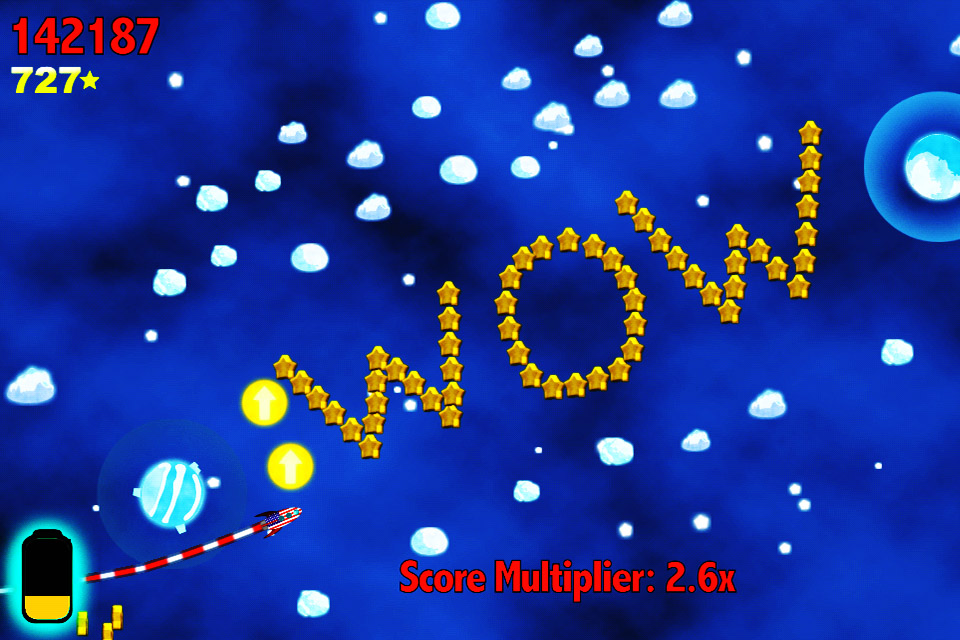

Hi! I'm Clay Schubiner
Scroll down to find out more about me
Star Stream
Top 200 iOS Arcade Game
About The Game
A top 200 arcade game in the App Store, Star Stream is an iOS game that features a simple, one-touch control scheme, and an innovative physics engine to allow players to move between planets and collect stars. I was the game’s main designer, project lead, and was one of two primary programmers.
Features
★ Innovative one-swipe gameplay
★ Global leaderboards
★ Save and replay your gameplay videos
★ Funky techno music
★ And much, much more!




To be continued...
More of my work will be displayed here as I continue to build this site in the coming weeks.
Email me at claytons@stanford.edu.